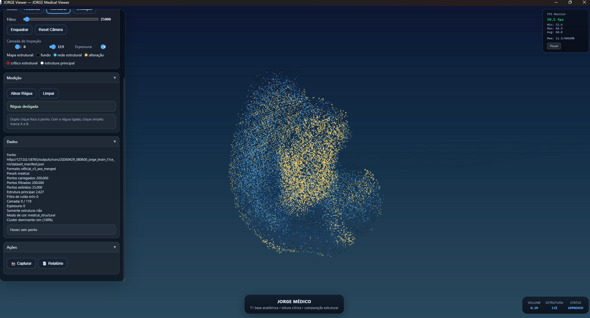
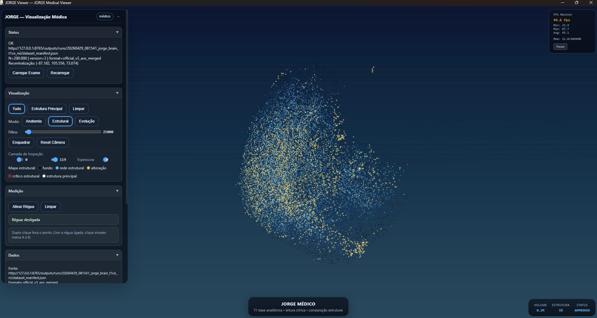

Milhões de voxels podem existir em um exame. Mas conectividade, organização espacial e mudança estrutural contam outra história.
JORGE Med aplica processamento determinístico e leitura estrutural a volumes médicos para apoiar pesquisa, comparação temporal e exploração técnica responsável.
Não substituir diagnóstico. E sim oferecer uma nova camada de leitura estrutural para volumes complexos.
Destaca áreas estruturalmente importantes para inspeção técnica e pesquisa.
Observa continuidade, fragmentação e backbone estrutural.
Analisa como a estrutura mudou entre exames.
Navegação volumétrica para interpretação espacial.
Em ambientes críticos, confiança técnica exige consistência.
JORGE Med prioriza processamento reproduzível, auditoria de fluxo e leitura explicável.
Etapas claras e rastreáveis.
Resultados consistentes sob mesmas condições.
Suporte à pesquisa e interpretação, não substituição clínica.
Visualizações geradas pelo JORGE Med em volumes médicos reais, demonstrando leitura estrutural, distribuição espacial e regiões de interesse para investigação técnica.

Destaque visual de regiões estruturalmente relevantes em volume médico para inspeção técnica e pesquisa.

Mapeamento espacial complementar para observar organização, conectividade e distribuição interna do volume.
O caminho responsável é validar junto de especialistas, datasets controlados e objetivos claros.
Radiologistas, pesquisadores, universidades e laboratórios interessados em validação séria são bem-vindos.